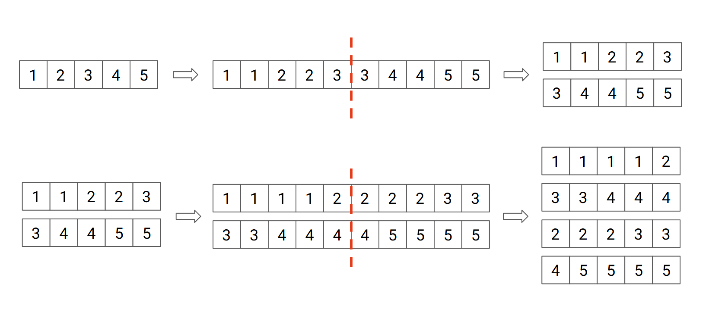

To broaden her culinary expertise, Bu Dengklek decides to travel to Malang. She visited Umami Malang Meal (UMM) restaurant. While waiting for her food to be served, she observed a restaurant server twisting a bunch of lists.
The twist operation on a list $a = [a_1, a_2, \ldots, a_n]$ of length $n$ is defined as follows:
The twist operation can also be done at once to a sequence of lists. When a sequence of lists is twisted, do the following:
For instance, if in the beginning there is only one list $[1, 2, 3, 4, 5]$, the twist operation will result in two lists: $[1, 1, 2, 2, 3]$ and $[3, 4, 4, 5, 5]$. If this sequence of lists is twisted again, it will result in the sequence $[1, 1, 1, 1, 2], [3, 3, 4, 4, 4], [2, 2, 2, 3, 3], [4, 5, 5, 5, 5]$, in that order.

Initially, Bu Dengklek only observe a list $A$ of length $N$. The twist operation will then be done on the list for $K$ times. Bu Dengklek then wonders, for each of the lists after the twist operations, what is the sum of all elements in the list. If the number of lists in the final result exceeds $200\,000$, Bu Dengklek only needs to know the sums from the first $200\,000$ lists. Help Bu Dengklek find the sums!
The input is given in the following format:
N K A[1] A[2] … A[N]
Output the sum of each of the lists in a separate line. If there are more than $200\,000$ lists in the final sequence, you only need to output the sums of the first $200\,000$ lists.
5 2 1 2 3 4 5
6 18 12 24
The given example is the same as the example from the problem description. The final result after $2$ twists and their sums are:
1 20 0
0 0 0 ... (remaining 199997 lines containing 0)
The final result after $20$ twists is $1048756$ lists, each containing an element $0$. Since Bu Dengklek is only interested in the sums of the first $200\,000$ lists, then you only need to output $0$ for $200\,000$ times.